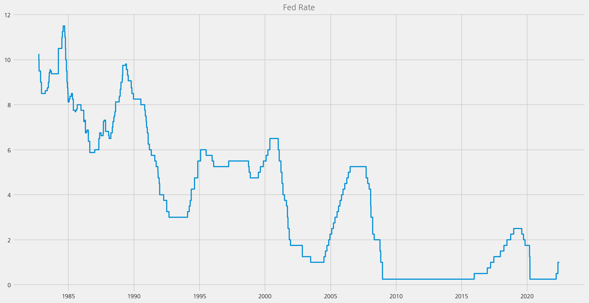
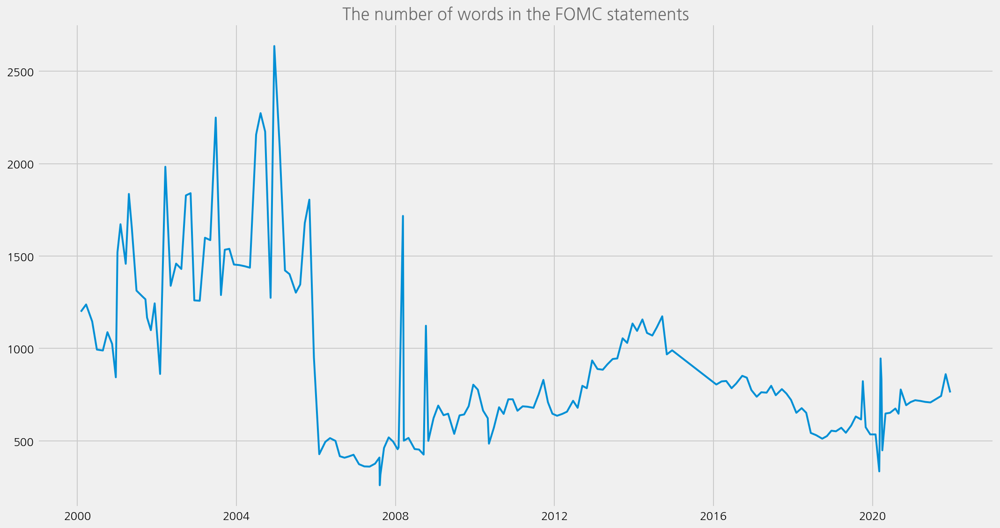
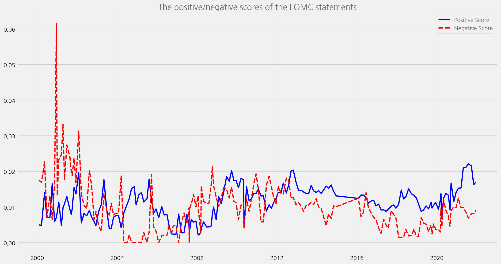
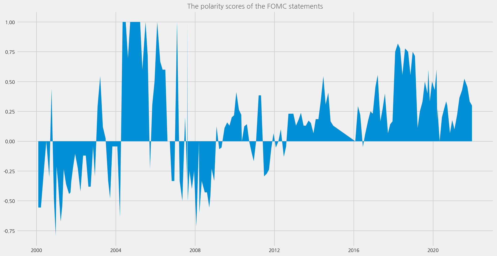
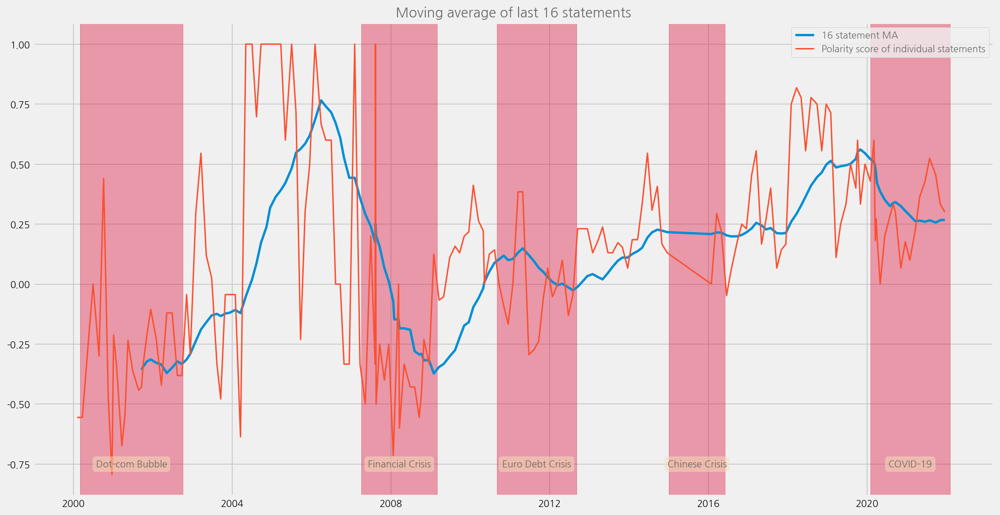

Sentiment Analysis of FOMC Statements
Contents
Sentiment Analysis of FOMC Statements¶
Analyse statement by Loughran and McDonald dictionary
%config InlineBackend.figure_format='retina'
import logging
from ekorpkit import eKonf
logging.basicConfig(level=logging.WARNING)
print(eKonf.__version__)
0.1.30+13.g779907e.dirty
start_year = 2000
Load FRED Data¶
cfg = eKonf.compose(config_group="io/fetcher=quandl")
cfg.series_name = "DFEDTAR"
cfg.series_id = ["DFEDTAR", "DFEDTARU"]
cfg.force_download = True
quandl = eKonf.instantiate(cfg)
fedrates = quandl.data.copy()
fedrates
| DFEDTAR | series_id | |
|---|---|---|
| date | ||
| 1982-09-27 | 10.25 | DFEDTAR |
| 1982-09-28 | 10.25 | DFEDTAR |
| 1982-09-29 | 10.25 | DFEDTAR |
| 1982-09-30 | 10.25 | DFEDTAR |
| 1982-10-01 | 10.00 | DFEDTAR |
| ... | ... | ... |
| 2022-05-22 | 1.00 | DFEDTARU |
| 2022-05-23 | 1.00 | DFEDTARU |
| 2022-05-24 | 1.00 | DFEDTARU |
| 2022-05-25 | 1.00 | DFEDTARU |
| 2022-05-26 | 1.00 | DFEDTARU |
14487 rows × 2 columns
cfg = eKonf.compose(config_group='visualize/plot=lineplot')
cfg.series.y = 'DFEDTAR'
cfg.plot.figsize = (15, 8)
cfg.figure.title = 'Fed Rate'
eKonf.instantiate(cfg, data=fedrates)

Load FOMC Corpus¶
from ekorpkit import eKonf
cfg = eKonf.compose(config_group='corpus')
cfg.name = 'fomc'
cfg.data_dir = "${cached_path:'https://github.com/entelecheia/ekorpkit-config/raw/main/data/fomc.zip',true,false}"
cfg.automerge = True
fomc = eKonf.instantiate(cfg)
print(fomc)
Corpus : fomc
print(fomc.data.content_type.unique())
fomc.data.head()
['fomc_minutes' 'fomc_statement' 'fomc_speech' 'fomc_beigebook'
'fomc_testimony' 'fomc_press_conf' 'fomc_meeting_script']
| id | text | timestamp | content_type | date | speaker | title | |
|---|---|---|---|---|---|---|---|
| 0 | 0 | A meeting of the Federal Open Market Committee... | 1993-02-03 | fomc_minutes | 1993-02-03 | Alan Greenspan | FOMC Meeting Minutes |
| 1 | 1 | A meeting of the Federal Open Market Committee... | 1993-03-23 | fomc_minutes | 1993-03-23 | Alan Greenspan | FOMC Meeting Minutes |
| 2 | 2 | A meeting of the Federal Open Market Committee... | 1993-05-18 | fomc_minutes | 1993-05-18 | Alan Greenspan | FOMC Meeting Minutes |
| 3 | 3 | A meeting of the Federal Open Market Committee... | 1993-07-07 | fomc_minutes | 1993-07-07 | Alan Greenspan | FOMC Meeting Minutes |
| 4 | 4 | A meeting of the Federal Open Market Committee... | 1993-08-17 | fomc_minutes | 1993-08-17 | Alan Greenspan | FOMC Meeting Minutes |
fomc_statements = fomc.data[fomc.data.content_type == 'fomc_statement']
fomc_statements = fomc_statements[fomc_statements.timestamp.dt.year >= start_year]
fomc_statements.set_index('timestamp', inplace=True)
fomc_statements.head()
| id | text | content_type | date | speaker | title | |
|---|---|---|---|---|---|---|
| timestamp | ||||||
| 2000-02-02 | 250 | For immediate release The Federal Open Market ... | fomc_statement | 2000-02-02 | Alan Greenspan | FOMC Statement |
| 2000-03-21 | 251 | For immediate release The Federal Open Market ... | fomc_statement | 2000-03-21 | Alan Greenspan | FOMC Statement |
| 2000-05-16 | 252 | For immediate release The Federal Open Market ... | fomc_statement | 2000-05-16 | Alan Greenspan | FOMC Statement |
| 2000-06-28 | 253 | For immediate release The Federal Open Market ... | fomc_statement | 2000-06-28 | Alan Greenspan | FOMC Statement |
| 2000-08-22 | 254 | For immediate release The Federal Open Market ... | fomc_statement | 2000-08-22 | Alan Greenspan | FOMC Statement |
Predict setniments with the LM sentiment analyser¶
config_group='model/sentiment=lm'
model_cfg = eKonf.compose(config_group=config_group)
model_cfg.preprocessor.tokenizer.nltk.lemmatize = True
cfg = eKonf.compose(config_group='pipeline/predict')
cfg.name = 'fomc_sentiments'
cfg.model = model_cfg
cfg.output_dir = "./data/predict"
cfg.output_file = f'{cfg.name}-lm.parquet'
cfg.num_workers = 100
fomc_sentiments = eKonf.pipe(cfg, fomc_statements)
fomc_sentiments.head()
Predicting [text]: 100%|██████████| 91/91 [00:11<00:00, 8.10it/s]
| id | text | content_type | date | speaker | title | positive | negative | num_tokens | polarity | subjectivity | polarity_label | uncertainty | |
|---|---|---|---|---|---|---|---|---|---|---|---|---|---|
| timestamp | |||||||||||||
| 2000-02-02 | 250 | For immediate release The Federal Open Market ... | fomc_statement | 2000-02-02 | Alan Greenspan | FOMC Statement | 0.005004 | 0.017515 | 1199 | -0.555556 | 0.022519 | negative | 0.019183 |
| 2000-03-21 | 251 | For immediate release The Federal Open Market ... | fomc_statement | 2000-03-21 | Alan Greenspan | FOMC Statement | 0.004847 | 0.016963 | 1238 | -0.555556 | 0.021809 | negative | 0.018578 |
| 2000-05-16 | 252 | For immediate release The Federal Open Market ... | fomc_statement | 2000-05-16 | Alan Greenspan | FOMC Statement | 0.013962 | 0.022688 | 1146 | -0.238095 | 0.036649 | negative | 0.020942 |
| 2000-06-28 | 253 | For immediate release The Federal Open Market ... | fomc_statement | 2000-06-28 | Alan Greenspan | FOMC Statement | 0.007042 | 0.007042 | 994 | 0.000000 | 0.014085 | neutral | 0.049296 |
| 2000-08-22 | 254 | For immediate release The Federal Open Market ... | fomc_statement | 2000-08-22 | Alan Greenspan | FOMC Statement | 0.007078 | 0.013145 | 989 | -0.300000 | 0.020222 | negative | 0.033367 |
Plot the sentiment scores¶
cfg = eKonf.compose(config_group='visualize/plot=lineplot')
cfg.series.y = 'num_tokens'
cfg.plot.figsize = (15, 8)
cfg.figure.title = 'The number of words in the FOMC statements'
cfg.figure.legend = None
eKonf.instantiate(cfg, data=fomc_sentiments)

cfg = eKonf.compose(config_group="visualize/plot=lineplot")
cfg.series.y = ["positive", "negative"]
cfg.series.form = "wide"
cfg.plot.figsize = (15, 8)
cfg.lineplot._parms_.palette = ["b", "r"]
cfg.lineplot._parms_.linewidth = 2.5
cfg.figure.title = "The positive/negative scores of the FOMC statements"
cfg.figure.legend.labels = ["Positive Score", "Negative Score"]
# eKonf.print(cfg)
eKonf.instantiate(cfg, data=fomc_sentiments)

cfg = eKonf.compose(config_group='visualize/plot=stackplot')
cfg.series.y = 'polarity'
cfg.plot.figsize = (15, 8)
cfg.figure.title = 'The polarity scores of the FOMC statements'
cfg.figure.xtickmajorformatterfunc = "mdates.DateFormatter('%Y')"
eKonf.instantiate(cfg, data=fomc_sentiments)

Merge with fed rate data¶
fomc_sentiments = fomc_sentiments.merge(fedrates, left_index=True, right_index=True)
fomc_sentiments.head()
| id | text | content_type | date | speaker | title | positive | negative | num_tokens | polarity | subjectivity | polarity_label | uncertainty | DFEDTAR | series_id | |
|---|---|---|---|---|---|---|---|---|---|---|---|---|---|---|---|
| 2000-02-02 | 250 | For immediate release The Federal Open Market ... | fomc_statement | 2000-02-02 | Alan Greenspan | FOMC Statement | 0.005004 | 0.017515 | 1199 | -0.555556 | 0.022519 | negative | 0.019183 | 5.75 | DFEDTAR |
| 2000-03-21 | 251 | For immediate release The Federal Open Market ... | fomc_statement | 2000-03-21 | Alan Greenspan | FOMC Statement | 0.004847 | 0.016963 | 1238 | -0.555556 | 0.021809 | negative | 0.018578 | 6.00 | DFEDTAR |
| 2000-05-16 | 252 | For immediate release The Federal Open Market ... | fomc_statement | 2000-05-16 | Alan Greenspan | FOMC Statement | 0.013962 | 0.022688 | 1146 | -0.238095 | 0.036649 | negative | 0.020942 | 6.50 | DFEDTAR |
| 2000-06-28 | 253 | For immediate release The Federal Open Market ... | fomc_statement | 2000-06-28 | Alan Greenspan | FOMC Statement | 0.007042 | 0.007042 | 994 | 0.000000 | 0.014085 | neutral | 0.049296 | 6.50 | DFEDTAR |
| 2000-08-22 | 254 | For immediate release The Federal Open Market ... | fomc_statement | 2000-08-22 | Alan Greenspan | FOMC Statement | 0.007078 | 0.013145 | 989 | -0.300000 | 0.020222 | negative | 0.033367 | 6.50 | DFEDTAR |
Plot the results and compare to the economical uncertainty / systemic risk periods¶
cfg = eKonf.compose(config_group="io/fetcher/fomc")
cfg.output_dir = "../data/fomc"
fomc = eKonf.instantiate(cfg)
from datetime import datetime
recessions = fomc.recessions.to_dict(orient="records")
span_args = eKonf.compose(
config_group="visualize/plot/figure/axvspan", return_as_dict=True
)
annot_args = eKonf.compose(
config_group="visualize/plot/figure/annotation", return_as_dict=True
)
span_args["color"] = "crimson"
span_args["alpha"] = 0.4
spans = []
annotations = []
for span in recessions:
annotation = span["name"]
start = span["from_date"]
end = span["to_date"]
span = {"xmin": eKonf.to_dateparm(start), "xmax": eKonf.to_dateparm(end)}
span = {**span_args, **span}
x = start + (end - start) / 2
y = -0.75
annot = {"text": annotation, "x": eKonf.to_dateparm(x), "y": y}
annot = {**annot_args, **annot}
spans.append(span)
annotations.append(annot)
window = 16
fomc_sentiments["polarity_ma"] = fomc_sentiments.polarity.rolling(window).mean()
cfg = eKonf.compose(config_group="visualize/plot=lineplot")
cfg.series.form = "individual"
cfg.plot.figsize = (15, 8)
cfg.plots.append(cfg.lineplot.copy())
cfg.plots[0].y = "polarity_ma"
cfg.plots[0]._parms_.linewidth = 2.5
cfg.plots[0]._parms_.palette = "r"
cfg.plots[1].y = "polarity"
cfg.plots[1]._parms_.linewidth = 1.5
cfg.plots[1]._parms_.palette = "g"
cfg.figure.title = f"Moving average of last {window} statements"
cfg.figure.legend.labels = [
f"{window} statement MA",
"Polarity score of individual statements",
]
cfg.figure.axvspans = spans
cfg.figure.annotations = annotations
eKonf.instantiate(cfg, data=fomc_sentiments)

chair = fomc.chairpersons
chair = chair[chair.to_date.dt.year >= start_year]
annot_args = eKonf.compose(
config_group="visualize/plot/figure/annotation", return_as_dict=True
)
spans = []
annotations = []
for row in chair.iterrows():
row_num = row[0]
start = row[1]["from_date"]
if start.year < 2000:
start = datetime(2000, 1, 1)
end = row[1]["to_date"]
annotation = row[1]["last_name"]
color = "crimson" if row_num % 2 == 0 else "darkblue"
alpha = 0.4 if row_num % 2 == 0 else 0.0
span = {
"xmin": eKonf.to_dateparm(start),
"xmax": eKonf.to_dateparm(end),
"alpha": alpha,
"color": color,
}
x = start + (end - start) / 2
y = -0.75
annot = {"text": annotation, "x": eKonf.to_dateparm(x), "y": y}
annot = {**annot_args, **annot}
spans.append(span)
annotations.append(annot)
cfg = eKonf.compose(config_group="visualize/plot=lineplot")
figure2 = cfg.figure.copy()
cfg.series.form = "individual"
cfg.plot.figsize = (15, 8)
cfg.plots.append(cfg.lineplot.copy())
cfg.plots[0].y = "polarity_ma"
cfg.plots[0]._parms_ = dict(linewidth=2.5, color="red")
cfg.plots[1].y = "polarity"
cfg.plots[1]._parms_ = dict(linewidth=1.5, color="green")
cfg.figure.title = f"Moving average of last {window} statements"
cfg.figure.legend = dict(
labels=[
f"{window} statement MA",
"Polarity score of individual statements",
],
loc=2,
)
scatter_cfg = eKonf.compose(config_group="visualize/plot/scatter")
scatter_cfg.y = "DFEDTAR"
scatter_cfg.secondary_y = True
scatter_cfg._parms_ = dict(color="blue", alpha=0.8)
cfg.plots.append(scatter_cfg)
cfg.verbose = True
figure2.grid = False
figure2.secondary_y = True
figure2.ylim = "(-4, 10)"
figure2.legend = dict(
labels=["Fed Rate"],
loc=1,
)
cfg.figures.append(figure2)
cfg.figure.axvspans = spans
cfg.figure.annotations = annotations
eKonf.instantiate(cfg, data=fomc_sentiments)
Creating secondary axis to axis[0]
Saved figure to ./figs/lineplot.png